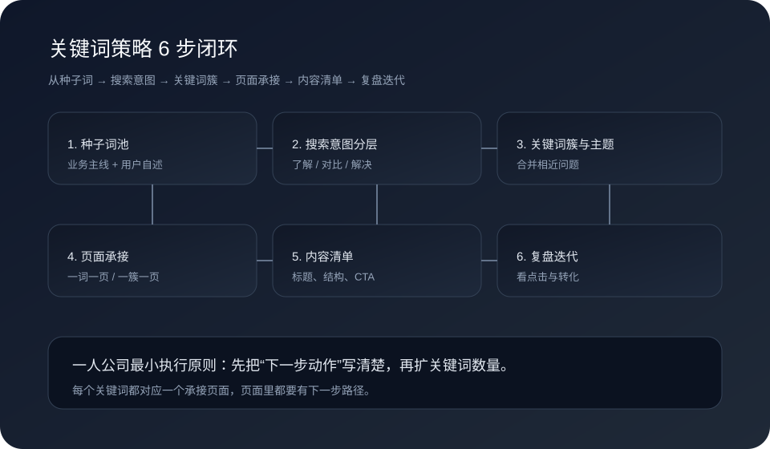

这篇先解决什么
先解决“关键词不知道从哪选”“文章写完没有承接”“流量来了但没转化”这三类现实问题，再谈更复杂的关键词工具或系统化内容生产。
很多人搜“关键词策略怎么做”“关键词研究怎么做”“内容选题怎么做”，其实是在问：我到底该先写哪一页，写完以后客户会往哪一步走？对一人公司来说，关键词策略的价值不在于“词表多”，而在于“每一个词都能引导下一步动作”。

先解决“关键词不知道从哪选”“文章写完没有承接”“流量来了但没转化”这三类现实问题，再谈更复杂的关键词工具或系统化内容生产。
Harris 的关键词策略强调：先研究“哪些关键词有价值”，再决定“哪些页面要承接”。Semrush 与 HubSpot 的关键词研究方法也反复强调“搜索意图”和“匹配页面”的重要性。对一人公司来说，这意味着你不是先写一堆文章，而是先决定：用户会搜什么，你就用哪一页回答，并在页内把下一步动作写清楚，比如去看 官网咨询表单怎么设计 或直接 预约咨询。
这 6 步做完，你就能得到一个可持续迭代的关键词地图，而不是一堆零散选题。
把“业务主线 + 用户自述”整理成 20-50 个种子词，比如“内容增长怎么做”“一人公司客户承接”“AI 内容运营”。
把词分成了解型、对比型、解决型。了解型需要普及，解决型要给流程，避免一页说完所有事。
把意思相近的词合并成一个主题簇，例如“关键词研究怎么做 / 关键词策略怎么做 / 关键词地图”可以归为同一主题页。
一簇对应一页，每页只有一个主要问题。页面内部链接到下一步动作，比如引导去看 AI 内容运营怎么开始。
为每页写出标题、结构、小结和 CTA，避免“写着写着跑题”。
看哪一页有咨询、哪一页停留短，按“下一步动作是否清楚”来复盘，而不是只看流量。
Semrush 的关键词地图方法强调“关键词分配给具体页面”，而不是让多篇文章争同一组词。对于一人公司来说，更重要的是把“入口页 → 承接页 → 咨询页”连起来。
从内容目标和承接路径入手，把内容增长变成可复制流程。
用表单收集关键需求，让关键词承接到真实沟通。
如果你想把关键词策略和咨询承接连成一条链路，可以直接沟通现状。
如果你已经开始写内容但不知道如何承接咨询，可以把现状发来，我们先帮你拆成最小可执行的关键词地图。